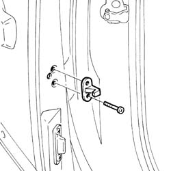

7020D56 lock device (1) lh or rh for sliding door - r r
- Path
- Procedures > 70 FITTINGS > 7020 LOAD CARRYING COMPARTMENT DOORS > 7020D sliding door closure devices > 7020D56 lock device (1) lh or rh for sliding door - r r
- Kind
- repair procedure (removal / refitting; the operation number is the code)
- Applies to
- all engines; all production periods
- Interactive page
- https://sloeber94.github.io/elrnDB-fDbl/en/#/2585072
Applies to: all engines; all production periods
 Removing
Removing
 Refitting
Refitting1. Undo the bolts (1a) and remove the locking device (1b).

Applies to: all engines; all production periods
Refitting
RemovingFit the locking device and tighten the fixing bolts.
 | Fastening | Component | Ø | Value (daNm) |
|---|---|---|---|---|
- | Bolt | DEVICE FOR HOLDING SLIDING DOOR OPEN | M6 | 1.2 |
Check that the locking device and the striker on the door pillar are properly aligned.